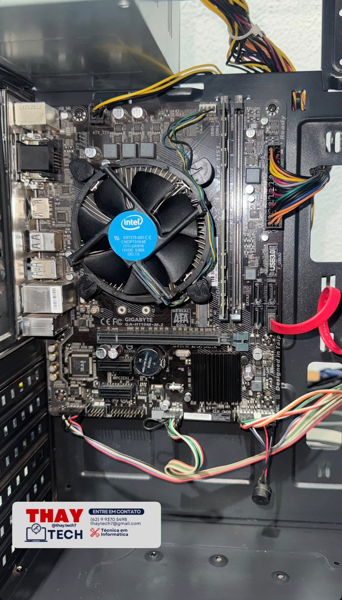
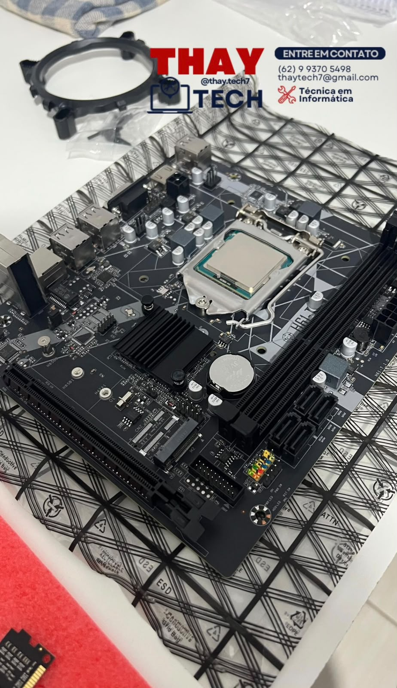
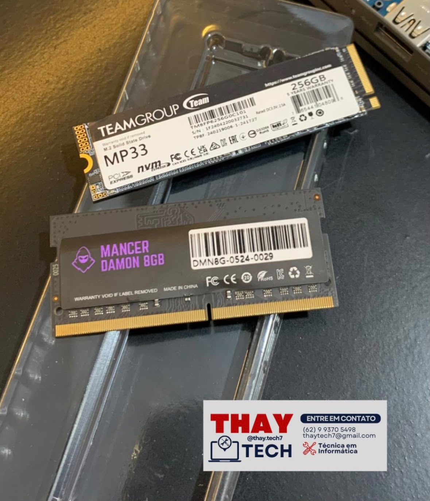

SSDs e armazenamento
Opções para aumentar a velocidade e o espaço do seu computador.
Em breveServiços de informática e produtos recomendados para melhorar o desempenho do seu computador ou notebook.
Produtos de informática selecionados para facilitar sua escolha. Os links de compra estarão disponíveis em breve.
Opções para aumentar a velocidade e o espaço do seu computador.
Em breveProdutos para melhorar o desempenho e a capacidade do equipamento.
Em brevePeriféricos para trabalho, estudo, uso diário e jogos.
Em breveAcessórios úteis para proteger e melhorar o uso do notebook.
Em breveCabos, carregadores, conversores e adaptadores para diferentes conexões.
Em breveProdutos para deixar seu espaço mais confortável e organizado.
Em breveSoluções para manter seu computador ou notebook funcionando corretamente.
Formatação de computadores e notebooks com instalação e configuração do sistema.
Limpeza e manutenção preventiva para aumentar a vida útil do equipamento.
Instalação e configuração dos programas necessários para seu uso.
Instalação de SSD, memória RAM e outras peças compatíveis.
Suporte remoto para configurações e problemas que não exigem atendimento presencial.
Conheça alguns serviços realizados pela Thay Tech.

Limpeza interna, organização dos componentes e verificação do funcionamento do computador.

Instalação de placa-mãe, processador e componentes compatíveis com o equipamento.

Instalação de componentes para melhorar a velocidade, o armazenamento e o desempenho.
A Thay Tech oferece serviços de informática com atendimento responsável e soluções adequadas às necessidades de cada cliente.
Também selecionamos produtos de informática para ajudar você a encontrar peças e acessórios de forma mais simples e segura.
Atendimento em Iporá, Goiás e região.Encontre no site o produto mais adequado para sua necessidade.
Clique no botão do produto para visualizar preço e disponibilidade.
O pagamento, o envio e a entrega serão realizados pela plataforma parceira.
Os produtos serão vendidos e entregues por lojas parceiras. Preços e disponibilidade poderão sofrer alterações.